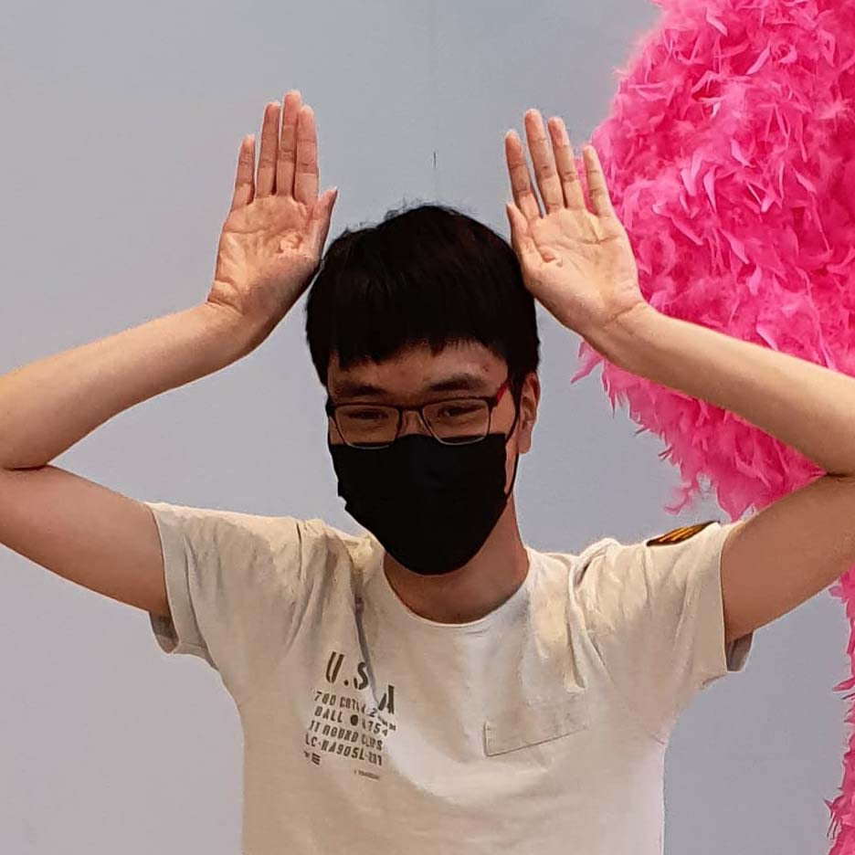

Victor Ly, 21
MMD studerende på KEA
Siden jeg var lille, har jeg altid elsket at arbejde både kreativt og visuelt. Jeg har en stor passion for grafisk design. Jeg interesserer mig for matematik og andre naturvidenskabelige områder, og tilbringer min fritid på computerspil, se YouTube og lytte til musik. Katte er mit yndlingsdyr.